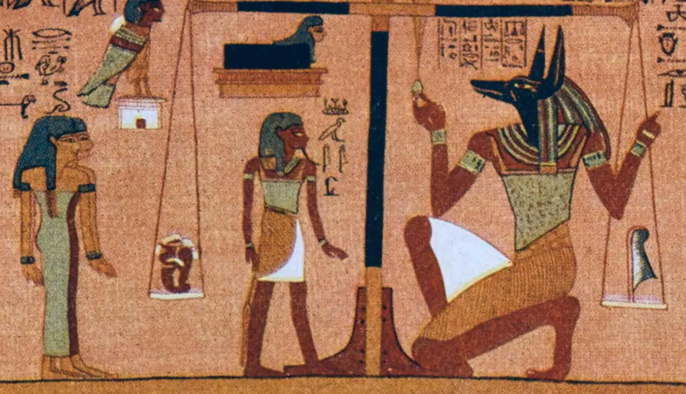

Anubis


Guarding the gates of the underworld, Anubis is one of the most iconic and ancient deities of Egyptian mythology. Depicted as a melanistic jackal or a man with a jackal's head, he ruled over death, mummification, and the protection of tombs long before the rise of Osiris.
Lord of the Sacred Land
In ancient Egyptian belief, black was not a color of mourning, but a symbol of rebirth and the rich soil of the Nile. Anubis was painted pitch-black to represent his power over the regeneration of life after death. He watched over cemeteries as the "Lord of the Sacred Land" to prevent grave robbers and evil spirits from defiling tombs.
The Inventor of Mummification
According to myth, when the god Osiris was murdered and scattered across Egypt, Anubis helped gather his remains. He wrapped the body in linen strips, creating the very first mummy. Through this act, Anubis became the patron god of embalmers, guiding priests during the sacred mummification process to ensure eternal life.
The Weighing of the Heart
- The Underworld Guide: Anubis acted as a psychopomp, guiding the souls of the dead through the perilous underworld to the Hall of Ma'at.
- The Judgment Scales: At the final judgment, Anubis stood over a massive golden scale. He placed the deceased person's heart on one side and the Feather of Truth (Ma'at) on the other.
- The Final Verdict: If the heart was heavy with sins, it would tip the scale and be devoured by the monster Ammit. If the heart was lighter than the feather, Anubis would lead the soul into a blissful eternity.
Archeological Discoveries
- The Tomb Guardian: Statues of a reclining black jackal were frequently placed at tomb entrances. A famous, breathtaking statue of Anubis was discovered guarding King Tutankhamun's treasury in 1922.
- The Jackal Connection: Historians believe ancient Egyptians associated jackals with death because these wild canines frequently scavenged around shallow desert graves in ancient times. To stop this, they transformed the predator into a divine protector.